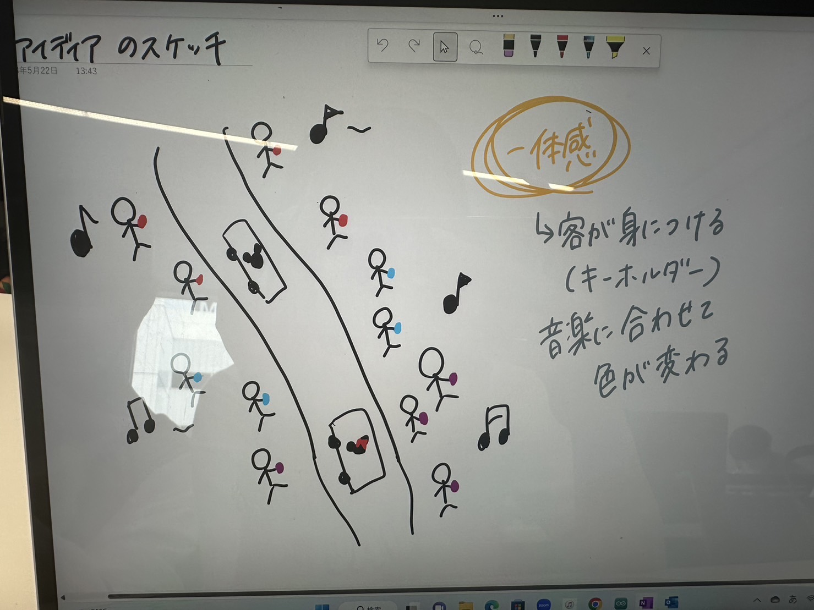
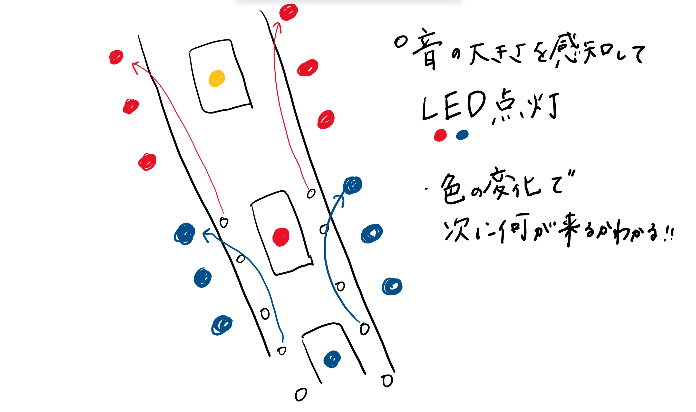

アイディアのスケッチ
 概要
音を感知し、その音の大きさによってLEDが点滅し色が変化する仕組み。無線で作ることは難しい... →有線で置物に変更！！！
プロセスメモープロセス・必要なモノやステップ・やるべきこと（プロジェクトマネジメント）
●やるべきこと♡考えること
→実際にやったこと
●音を感知してLEDを点灯させる 参考サイト
→サイトを参考にセンサーを設置・音を調節して感知できるように設定した
●置物の形
♡どのようにすれば安定するのか、光がよく見えるのか
→全体に光がわかるように丸い形に製作・色味がわかるように3Dプリンターで1mmの厚さにした
→置いている時に安定するように提灯のような形にした

使用したモノ（リンクも）
音声センサー/購入サイト3Dプリンター
LED
紹介動画
班メンバー tks himeri